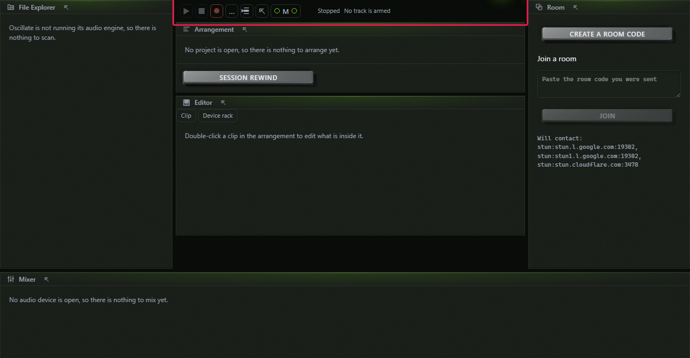
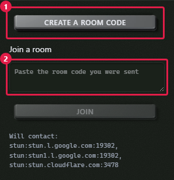
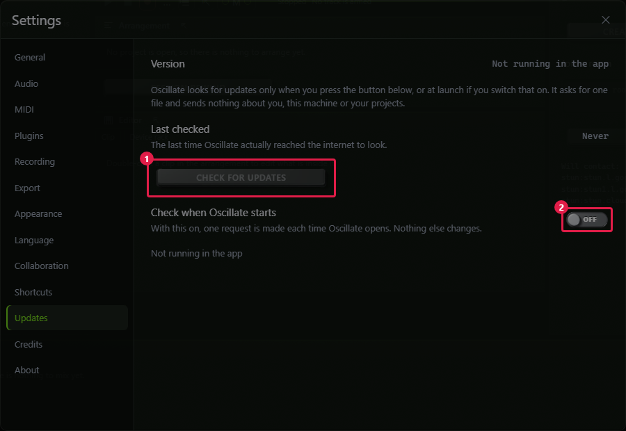

How it works, step by step.
The manual: every panel, every editor, the room, the plugins and the limits.
Getting started
Oscillate installs like any other desktop application and runs offline. The first time you open it you are shown the agreement; you have to accept it before the application opens, and you can reopen it at any time from Settings ▸ About ▸ View the agreement.
After that you are in a session called New Project. Nothing is saved anywhere until you save it, except the crash journal — which records every change as you make it so that a crash costs you nothing rather than costing you the afternoon.

Press Space to start and stop. Drag a sound from the File Explorer onto a track, or double-click an empty part of a MIDI track to make a clip and start writing.
The window and its panels
The window is borderless and Oscillate draws its own minimise, maximise and close. The four panels are toggled from the titlebar or with a key:
| Key | Panel | What it is |
|---|---|---|
| Ctrl+1 | File Explorer | Your sounds, your plugins and Oscillate's own devices, with a preview. |
| Ctrl+2 | Editor | The piano roll, the drum grid, automation and the waveform editor. |
| Ctrl+3 | Mixer | Faders, meters, the Masking Radar and the loudness panel. |
| Ctrl+4 | Room | Room codes, the roster, chat, voice, cameras and screen share. |
On macOS every Ctrl below is Cmd. Any panel can be dragged out into a window of its own, which keeps working on a second monitor.
Drag the divider between two panels to resize them. Below 1280 pixels wide the side panels collapse on their own, because the arrangement stops being usable before they do.
The arrangement
A timeline with a bar-and-beat ruler, a grid that follows the zoom, track headers down the side, and clips drawn from what they actually are — a real waveform for audio, real notes for a pattern.
Editing clips
- Drag a clip to move it; hold Alt while dragging to copy it.
- Drag either end to trim; drag the top corner to fade.
- Drag the loop handle on the right edge to repeat it.
- Ctrl+Z takes back the whole gesture — however many clips it touched, one press.
The Cut
Press B for the blade and drag a stroke across the arrangement. Every clip the stroke crosses is split where it crossed, and the angle of the stroke sets how long the crossfade is: a vertical stroke is a hard cut, a shallow one is a long blend. Press V to go back to the pointer.
Turning a clip into the other kind
Right-click a MIDI clip and choose Render to audio; right-click an audio clip and choose Convert to MIDI. Either way the result lands beside the original rather than over it, and one press of undo puts things back.
A pattern is rendered through whatever is on that track: the instrument in its slot and then every audio effect after it. A device you switched off is not in the render. The track's own fader and pan deliberately are not either — the new clip plays through them, so printing them would apply them twice.
Converting audio to MIDI is imperfect and says so: it tells you how many hits it could not read a pitch from. A drum loop converts to nothing at all, which is the honest answer.
The piano roll
Double-click a MIDI clip to open it. Draw notes with the pencil (P), or double-click in the grid. The keyboard down the left side plays the instrument on the track, and one key can be set to play a whole chord.
Scales
Around ninety scales. Choosing one highlights its notes, and Ctrl+K moves whatever is selected onto it. Folding hides every row that is not in the scale, which turns a chromatic grid into one you can read.
The note operations
| Key | What it does |
|---|---|
| Ctrl+U | Quantize — snap the selected notes to the grid |
| Ctrl+Shift+U | Humanize — push them back off it, by a little |
| Ctrl+L | Legato — stretch each note to meet the next |
| Ctrl+R | Reverse the order of the selected notes |
| Ctrl+K | Move them onto the clip's scale |
| Ctrl+D | Duplicate in place |
| Shift+D | Duplicate after — the usual way to build a part |
| ← → | Nudge by one grid division |
| ↑ ↓ | Move a semitone; with Shift, an octave |
The velocity lane under the grid has a handle per note. Ghost notes from any other clip can be drawn behind the one you are editing, which is how you write a bassline against a chord part without switching back and forth.
The drum grid
The same clip seen as one row per drum instead of one row per pitch. Click a cell to place a hit, drag across cells to fill them, and drag a hit up or down within its row to change its velocity. Everything in the piano roll's table above works here too — it is the same notes underneath.
Automation
Every fader, pan and device control can be automated. Open a track's automation lane, choose the target, and draw. Points snap to the grid; hold Alt to place one freely. A curve between two points can be bent by dragging its middle.
Kata are automation shapes you draw once and stamp anywhere — a swell, a filter sweep, a sidechain-shaped duck — so a gesture you liked is reusable rather than redrawn.
Recording and comping
Arm a track, press record, play. Audio is written to disk as it arrives rather than held in memory, so a crash costs you the last block and not the take.
Record over the same bars again and you get a second take stacked under the first. Choose the parts you want from each and Oscillate assembles the comp. The takes you did not choose are never deleted — that is what Shadow Takes means, and it is why changing your mind a week later costs nothing.
A count-in is set in Settings ▸ Recording. It is off by default.
The mixer
Ctrl+3. A strip per track with a fader, a pan, mute, solo, the device rack and a meter that is drawn from the audio the engine actually produced — never from a prediction.
The Masking Radar
Press Radar and Oscillate watches for pairs of tracks fighting for the same band — the bass and the kick, the vocal and the pad — and names the pair and the frequency. It costs CPU while it is on and the tooltip says so.
A pair that has not been heard yet reads Not heard yet, not "clean". If the session has more tracks than the radar watches, it tells you that too rather than silently showing a subset.
Loudness and true peak
Press Loudness for integrated LUFS, short-term, the range and true peak, plus a table of what each streaming service targets and what it would do to your master. Each target carries the date it was last checked.
If the meter ever fell behind under load it says so — "the meter fell behind, so some audio was never measured". A number with no warning beside it means a complete measurement.
Plugins
Oscillate hosts VST3 and CLAP, and each plugin runs in a process of its own. A plugin that crashes greys out that device and leaves your session running.
Your plugins appear in the File Explorer under Plugins. Drag one onto a track, or select the track and click it. Open its own editor from the device rack — the real interface you bought, not a list of sliders — and closing and reopening it brings it back at the size it was.
Delay compensation is graph-wide and is proved by a null test: the same signal through a latency-reporting device and around it, cancelling to silence. A plugin this machine does not have becomes a named placeholder that still costs its samples, so a project opened somewhere else stays in time.
The stock devices
Sixty-nine instruments and effects ship inside Oscillate, including Freally Secretarium. Every panel is drawn from the device's own description, so the readout on a knob is the number the DSP is using rather than a second one that agrees most of the time.
Faces
A device shows what it is doing rather than only what it is set to: a compressor draws its gain reduction, an equaliser draws its response, a stereo device draws its field.
Some faces are deliberately blank. A transfer curve, a spectrum and a scope need a measurement that does not exist yet, and drawing a plausible shape from the controls would be a picture of nothing. They stay blank until the measurement is real.
Recipe strings
A device's settings copy as one line you can paste into a chat. A whole rack — stock devices and hosted plugins together — saves as a file and recalls onto any track in one undo step, including on a machine that is missing one of its plugins.
Devices that read the arrangement
Six of them do something no plugin can, because a plugin cannot see the arrangement it is inside. A compressor already holding the chorus when it arrives; a gate that opens for a hit two bars before it happens; a delay that empties into the bar line so the tail runs out instead of being cut. Reading two bars of audio ahead is latency and everybody pays for it; reading the structure costs nothing, and all of them declare zero.
The File Explorer
Ctrl+1. A home screen of places — Instruments, Audio Effects, MIDI Effects, Plugins — that you click into, a Choose folder button, and the folders you have added listed by name.
The filter searches what a device is as well as what it is called, so typing
compressor finds Vise.
The preview
Click a device and you hear its own demonstration — a note chosen and a length measured per instrument — with a waveform, a playhead, a loop, and ←/→ to run it backwards or forwards. Point it at a folder of your own and it previews your samples the same way. Five of the instruments are samplers and say so rather than playing silence: they cannot sound until you load a file.
Dragging a file in
Drag a .wav or a .mid straight from Windows Explorer or
Finder onto a bar in the arrangement and it lands
where you dropped it. MIDI goes onto MIDI tracks, audio onto audio
tracks, and the wrong kind is refused with a reason rather than being given a lane of
its own.
A dropped file is taken into the project, not referenced. Drop something out of a temporary folder and delete the original, and the clip still plays.
The room
Ctrl+4. Press Create a room code, wait for the code, and send it to whoever you are working with. They paste it, send you theirs back, you paste that into Let them in, and you are in the same session.

What you get
- A roster, with a colour each, and their cursors moving on your arrangement.
- Chat. It lasts as long as the room and nothing is written to disk.
- Voice, camera tiles and screen share — all off until you press something.
- Your undo is yours. Ctrl+Z takes back your last change and never somebody else's, even while their edits are arriving.
- Takeover — hand one track to somebody and take it back with one key. While they hold it they are the only writer for it, including you.
What never travels
A take you recorded travels. A sample you bought never does. When somebody joins a session that uses a sample pack they do not have, they get a list called Samples you need and the reason: Oscillate never sends samples between computers. Byte-identical is what piracy produces, and this product will not be a route to it.
When it does not connect
Roughly one connection in ten will not form, and Oscillate names which of nine causes it was — from no network was found to your network gives every server a different address. That last one needs a relay in the middle; there is a field for your own in Settings ▸ Collaboration.
Kumite and the Split Sheet
Kumite is a beat battle mode where each turn owns its own bars. The countdown is a countdown, but the bars are the rule — so two computers can never disagree about whose edit was legal.
The Split Sheet is who wrote what, derived from the edit log, with work anybody undid netted out. It is a starting point for a conversation about credit, not a legal document, and it says so.
The Lyric Lane
Select a vocal track and press Lyrics. A lane of words appears, locked to the playhead. Add lines, move a line a bar earlier or later, split a line into syllables, and point a recorded take at the words it belongs to.
Import a .txt or .lrc file and the words are
copied into the project — move the file afterwards and the words are
still there.
The type is meant to be sung from across a room, not read leaning in. Every lyric edit is an operation, so Ctrl+Z takes it back like everything else.
Export
File ▸ Export companion folder… writes stems and MIDI that any other DAW can open. Stems line up at bar 1, so importing them somewhere else does not mean nudging thirty files into place.
Format, sample rate, bit depth, dither and where it goes are in Settings ▸ Export.
Session cards. Ctrl+Shift+C, or File ▸ Session card…, renders a 1200×630 picture of the session — tempo, key, track and clip counts, length and the shape of the arrangement — to post. A room code cannot go on one: it is kilobytes long and contains your public address, so the option is present, disabled, and says why.
Settings
Ctrl+,. Every change applies immediately and persists per machine. There is no Apply button, because a settings dialog with one is a settings dialog that can be wrong about what is in effect.
Audio
Choose your output and how much of the device to take. On Windows you can ask for Exclusive, which gives you the lowest latency the hardware can do and silences every other application. Oscillate tells you which mode you actually got and why — either the stream opened exclusively or this machine would not open an exclusive stream, so the device is still shared. Never a silent downgrade.
Appearance and language
Both themes, eighteen languages, and the choice you make wins over the machine's on the next launch. Right-to-left is real, not a text alignment.
Updates
Settings ▸ Updates. Oscillate looks for an update only when you press Check for updates, or at launch if you switch that on — and it is off by default.

The check requests one static file and sends nothing about you, this machine or your projects. When an update is found you are shown the version, the date, the changelog and the size, and you choose. Every artifact is signed; one whose signature does not verify is refused with an error rather than installed.
With checking at launch switched off, nothing is contacted and the panel shows no result at all — Last checked stays Never. It never draws "you are up to date" over a check that did not happen, because those are different facts and only one of them would be true.
Shortcuts
Every one of these can be changed in Settings ▸ Shortcuts, and a chord that is already taken says which action has it. On macOS read Ctrl as Cmd.
| Chord | Action |
|---|---|
| Space | Play or pause |
| Ctrl+N | New project |
| Ctrl+O | Open a project |
| Ctrl+S | Save |
| Ctrl+Shift+S | Save as |
| Ctrl+Z | Undo — yours, always |
| Ctrl+Shift+Z | Redo |
| Ctrl+Shift+C | Session card |
| Ctrl+, | Settings |
| Ctrl+1 | Show or hide the File Explorer |
| Ctrl+2 | Switch the centre between the Arrangement and the Pattern Rack |
| Ctrl+3…5 | Show or hide a panel — Editor, Mixer, Room |
| B / V | The blade / the pointer |
| P | Draw mode (the pencil) |
| Home / End | Bar 1 / the end of the arrangement |
| Ctrl+A | Select everything |
| Esc | Clear the selection |
| Delete | Delete what is selected |
| Ctrl+U | Quantize |
| Ctrl+Shift+U | Humanize |
| Ctrl+L | Legato |
| Ctrl+R | Reverse the notes |
| Ctrl+K | Move the notes to the scale |
| Ctrl+D | Duplicate in place |
| Shift+D | Duplicate after |
| ← → | Nudge |
| ↑ ↓ | A semitone; with Shift, an octave |
| F | Fold the roll to the scale |
| G | Ghost notes — the rest of the pattern, behind these |
| Shift+V | The velocity lane |
| Shift+C | The chance lane — how often each note plays |
| Shift+R | The velocity-range lane — how far each note wanders |
Privacy and the network
Oscillate needs no account, collects no telemetry, and never sends your projects, your audio or anything about you or your machine anywhere. Recording, editing, generation, playback, mixing and export are entirely local.
There are exactly three occasions on which it uses the network:
- A collaboration session you opened or joined. Directly to the other people in it, peer to peer, with no server in the middle.
- A STUN lookup, only while a room is being established, to discover your public address. The server contacted is shown in Settings and can be replaced with your own — or switched off entirely, which means the room contacts nobody at all.
- An update check, only when you press the button or switch on checking at launch. Off by default. See Updates.
This is enforced by a build gate rather than promised: no HTTP client is reachable from any part of Oscillate except the collaboration and update components named above, and the gate proves it by walking the dependency graph rather than by searching for names. Crash reports are written to your disk, shown to you in full, and leave the machine only if you choose to send one.
The limits, stated plainly
- Four producers in a room, because every peer sends to every other peer and the fifth connection is where an ordinary home upload gives out.
- Roughly one connection in ten will not form without a relay, and Oscillate does not ship one — a relay costs bandwidth forever, and that is a running bill a free application cannot carry.
- A joiner does not receive your project. Both machines open the same file before the edits mean the same thing.
- Samples never cross the wire. A take you recorded does; a sample you bought does not.
- Six devices are named and greyed with no controls, each for a written reason rather than a shrug. The analyser and the gain-reduction trace are not live.
- A sampler cannot be rendered to audio yet. Converting a pattern on a sampler track is refused by name rather than handed back as silence.
- Screen share is Windows and Linux. macOS has no display-capture route out of an embedded webview that does not need private API in a notarised binary, so the button is absent there and says why.
- A dropped peer is not detected yet. If somebody's network goes, the roster keeps showing them.
Troubleshooting
There is no sound
Check Settings ▸ Audio first: the device, and which mode you actually got. If another application has the interface in exclusive mode, Oscillate cannot open it and says so. A track that is silent when others are not is usually soloed elsewhere, muted, or has its instrument slot empty.
A plugin does not appear
Settings ▸ Plugins lists the folders being scanned and what was found. A plugin that failed to load is listed as blocked with the reason, and can be unblocked to try again. Oscillate hosts VST3 and CLAP; it does not host VST2 or AU.
The room will not connect
Read the reason it gives — there are nine of them and they are different problems. Your network gives every server a different address means you need a relay, which goes in Settings ▸ Collaboration. Check that the code you pasted is the whole code: they are long, and a chat client that wrapped one will have broken it.
Something crashed
A report is written to your machine automatically. Settings ▸ General names the most recent one and opens the folder. The report contains the version, the operating system, the audio device and the plugin list by name — never your project, never a path from your disk, never a room code. It leaves your computer only if you choose to send it.
A panel went blank but the music kept playing
That is a different failure from a crash and it is the one most people do not report. The audio thread runs none of the interface's code, so playback continues and your project is intact. A report was still written; Settings will name it.